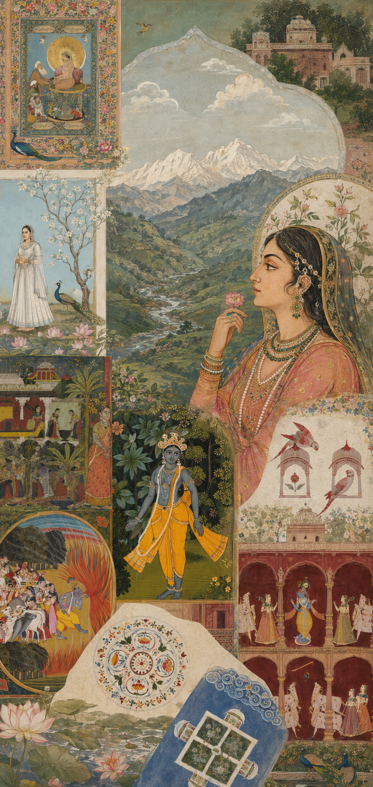

01
Royal Thali & Heritage Dining
An authentic culinary journey through the royal feasts and temple traditions of Odisha. Each thali is curated with hand-ground spices, cold-pressed mustard oil, and time-honored recipes passed down through generations.
